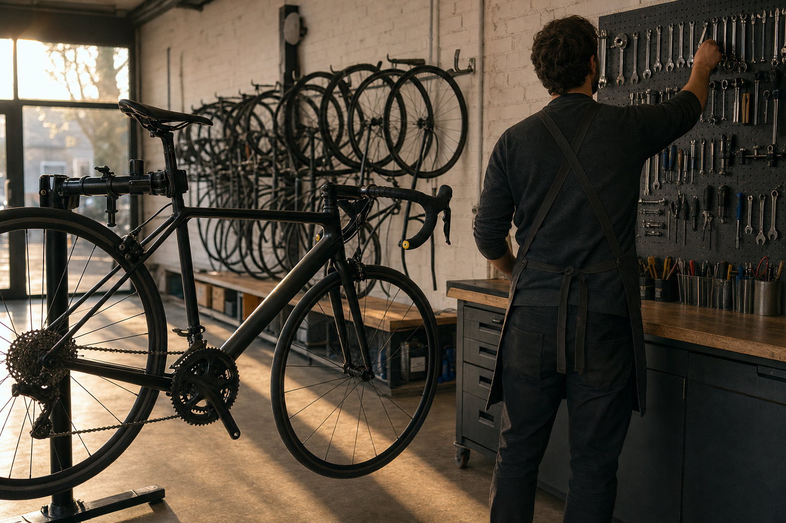
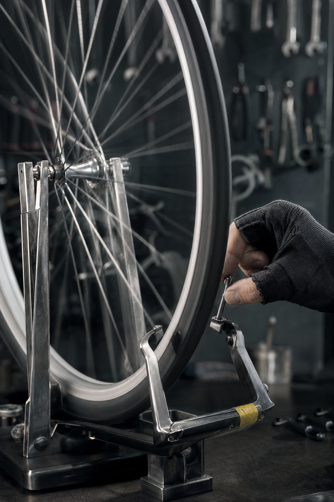
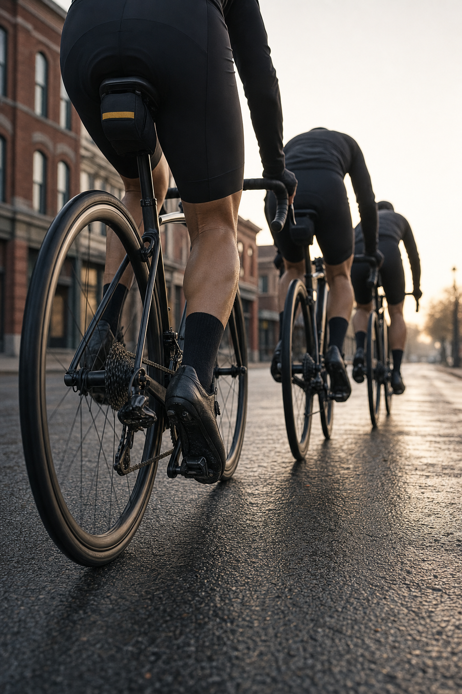

Prologue · A content day for Cadence Cyclery, McKinney
This October the McKinney shop moves to 210 N. Tennessee St. — a bigger room, still downtown.
Here's one day of filming the new shop the way a good shop actually works: at hand height.
Creative direction — treatment frames, not final footage.
Stage 1Flat · The read
I read Jackson's comments in Community Impact: fifteen years on the square, and a move to 210 N. Tennessee St. — "a bigger and better space," in his words. A downtown shop choosing to stay downtown and grow there is about the best kind of moving news a town gets.
A new room also starts with a fresh camera roll. The first pictures of it set the tone for how people meet the shop there, and I think the strongest ones are the work, not the walls.
Stage 2Rolling · The angle
Your site puts the whole shop in five words: "Modern Cycling. Old-School Service." The modern half lives on the floor, and good bikes photograph themselves.
The old-school half happens at hand height — a wheel in the truing stand, a bike in the workstand, a fit dialed in a few millimeters at a time, a build going from bare frame to finished bike. That's the half people trust a shop for, and it's where the camera lives for the day.
Hands, wheels, tools and backs — no faces — and every frame composed for a phone held upright.


Creative direction — treatment frames, not final footage.
Stage 3Mountain · The route
One day in the new shop, on a day you pick. Here's the route — it bends around your service queue, never the other way round.
Creative direction — treatment frames, not final footage.
The new room before the door opens: lights coming on, the floor before anyone walks it, a lock turning from the inside. Wide and slow on the cinema camera — the opener every reel can cut from.
A bike clamped at hand height. Cable ends, a torque wrench, a chain going on, a shift clicking into place. Close and unhurried — the sound carries as much as the picture.
The signature shot. A wheel spinning in the stand, the gap at the caliper closing a quarter-turn of the spoke key at a time — real-time, then slowed right down. Framed once, it's a shot the shop can come back to every time a wheel comes through.
The fit from the shoulders down: saddle height, cleats, the small adjustments that make a bike feel like yours. The fitter's hands and the bike — the rider is never shown face-on.
A custom build from the bare frame up. Parts laid out on the bench, the last bolt torqued, the finished bike wheeled out under the lights. A build has a beginning, a middle and an end, so it gets cut as its own piece.
If the day lands on a ride morning: the group leaving the shop, filmed from behind — cleats clicking in, wheels turning over, backs heading off down the street. If it doesn't, one finished bike wheeled out the front door does the same job.
The A7RV shoots stills all day alongside — new-room photos for the site, the grid and the newsletter, ready for anyone who asks what the new place looks like.
Stage 4Hilly · The day
Staff, riders and customers stay hands and backs unless someone wants to be on camera — and if they do, releases are a conversation first. You pick the day; the shoot works around the service queue.
Stage 5Rolling · Behind the camera
I'm Nelson Taylor — Taylormade Creative, Dallas–Fort Worth. On a content day I direct, shoot and cut, so the person who frames the truing stand is the same person who edits it.
Stage 6Flat finish · The finish
A move is a lot to carry, and the last thing it needs is a deadline from me. If this is useful, I'd be glad to talk for fifteen minutes once the new room has settled in.
If it's "not yet," that's a perfectly good answer — the page will keep.